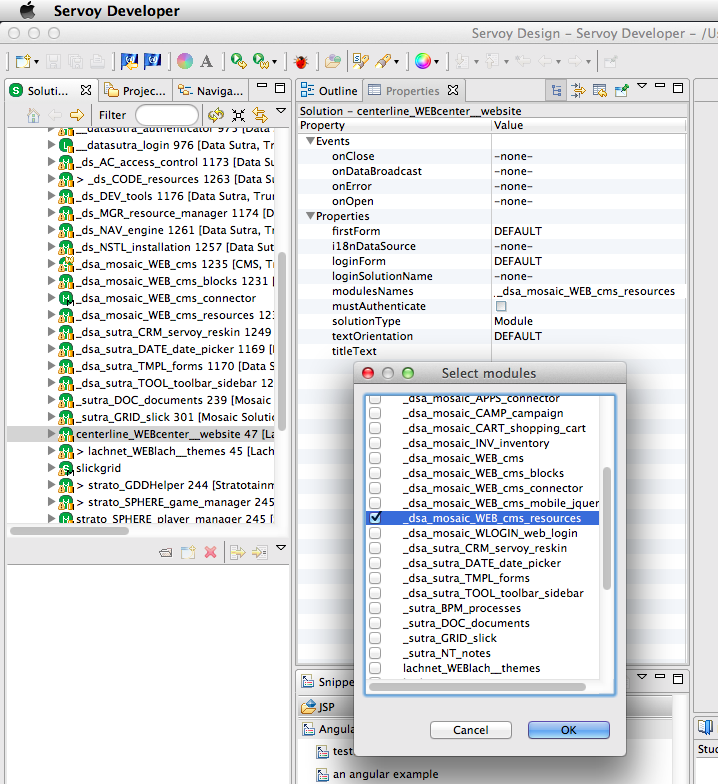

Extending Sutra CMS
While you can create entire sites without any custom server-side coding, it is common to extend the functionality of Sutra CMS by customizing code for a particular website or installation, interact with external business workflows, grab data via REST services, and even integrate with entire applications.
Some ideas: we’ve used this approach to hook websites into inventory and financial systems, track shipping via web services, create client portals, using the CMS as a reports server, etc.
Creating your own modules keeps the core CMS functionality intact and maintainable (and upgradable) without changing your custom code (and vice versa). A common example is to create a module for each website in the CMS to put custom blocks and functionality in.
Core CMS modules
Sutra CMS is comprised of a number of modules:
_dsa_mosaic_WEB_cms: core app screens and functionality_dsa_mosaic_WEB_cms_blocks: default blocks_dsa_mosaic_WEB_cms_resources: shared resources (code, relationships, value lists, images, etc)_dsa_mosaic_WEB_cms_connector: hook module to extend Sutra CMS functionality with other modules
Wiring in your module
To hook everything together:
- create a Servoy module and specify type as
module - include the cms resources module in your new module (this gives you all of the Sutra CMS api code and resources to work with)
- include your new module in the Sutra CMS connector module (this attaches your module to the CMS)
